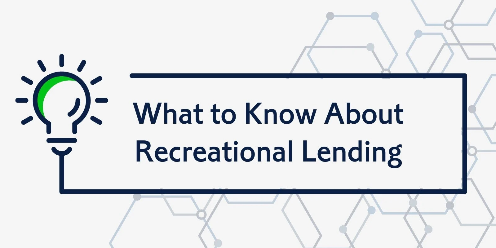

Discover how to make recreational lending a more lucrative opportunity for lenders, with access to a mature market, reliable customer base, and less competition.
By Chet Heughan
3 min. read
For a time, recreational lending lacked the familiar infrastructure, data, and tools you see in the automotive industry. Understandably, this lack of resources and information might have kept you, as well as other lenders, away from the recreational lending industry.
But now the RV, powersports, and marine markets have grown strong and profitable. And you have access to a library of information and tools ready to help you jump into recreational lending.
In fact, recreational lending has unique qualities you can capitalize on as a lender to close more deals with lower risks. Knowing more about recreational lending is a smart move if you want to expand into these new markets and gain new members to increase your profit potential.
Recreational dealerships have been around for a while, and as this industry continues to grow, you have an opportunity to take advantage of this maturing market. Over time, more and more historical and performance loan data is being published, making it easier for you to view profit potential.
For example:
Furthermore:
Over time, the recreational industry has grown and matured. With these studies and reports, you can see for yourself the potential profits lending in these markets holds for you. This is no longer a new industry, and many lenders have already operated their programs here successfully for years.
Being able to access a reliable network of recreational dealers gives you an edge when venturing into this well-established market.
On average, a customer’s credit score for a good automotive loan is around 660 or higher. However, to qualify for an RV loan, customers typically need a credit score of at least 700.
Since RVs, powersports vehicles, and marine vehicles are considered luxury items, you can set higher standards for your lending guidelines. Overall, a recreational customer tends to have better economic and financial status compared to the average automotive customer.
Recent data on recreational customers shows:
These customers are generally more reliable, which lowers your overall risk as a lender. In fact, reported loan delinquencies for marine and RV loans were 0.78% and 0.58% in Q2 2021 — more than 1% lower than the 2.09% indirect automotive loan delinquency reported in that time.
Since your members are in a better position to honor their loans, you can charge higher interest rates and gain higher yields. Plus, customers interested in purchasing a vehicle in this industry are more likely to do so when they have stable financial status, which eliminates subprime loans in this business.
In the U.S., the number of automotive dealerships has ranged between 16,000 and 17,000 over the last several years. The number of motorcycle dealerships was only about 7,000, meaning dealers typically have one to four competitors nearby.
This high concentration of automotive dealers means lenders face countless local and regional competitors compared to lenders in the powersports industry. Plus, recreational lenders don’t have to compete with manufacturer captive finance companies like in the automotive industry.
To increase your competitive advantage even further, tap into an established network of recreational dealers using a web-based platform like AppOne. This tool lets your business automatically connect to customers at any dealership in network, giving you an edge over lenders not in network.
The recreational lending industry has matured into a strong and profitable market for lenders willing to capitalize on its unique qualities. By taking the time to learn more about this industry and how to utilize the best lending workflow tools available, you’ll be able to jump into this market with confidence and increase your profits.